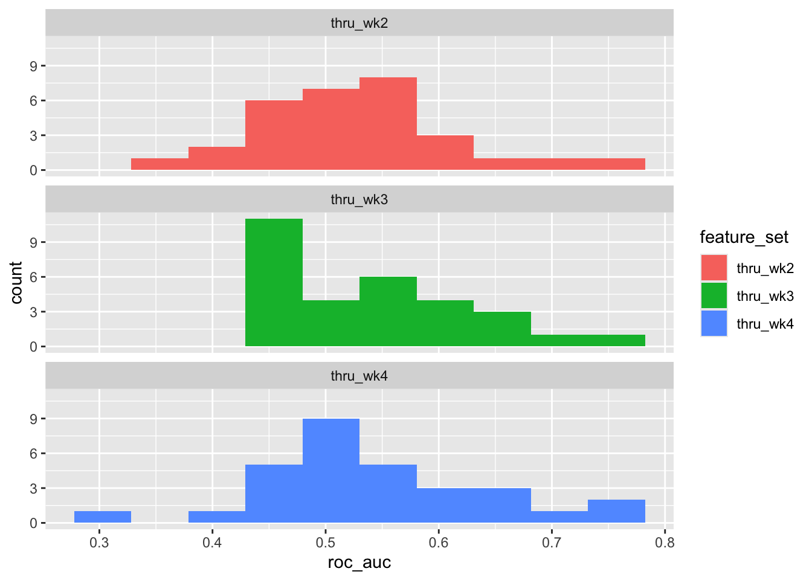

library(tidyverse)
library(tidymodels)Analysis Workflow Step 3: Fit & evaluate models in outer loop
Setup
Load libraries
Source functions file
source("fun_moodivate.R")This functions file (fun_moodivate.R) contains many functions that are used throughout the Moodivate project analysis scripts. Functions split data, fit and evaluate models, and provide helper functionality for the modeling process. See all annotated code building functions within fun_moodivate.R.
Read in average metrics
metrics_avg <- read_csv("metrics_inner_avg.csv",
show_col_types = FALSE)Identify best configuration for each outer fold (i.e., across inner folds)
We select the best model configuration for each outer fold. Specifically, this is the model configuration that produces the highest average performance across validation sets (held-out inner folds).
configs_best <- metrics_avg |>
group_by(outer_split_num) |>
arrange(desc(roc_auc)) |>
slice(1) |>
ungroup()
configs_best |> print(n = Inf)# A tibble: 30 × 10
n_jobs outer_split_num hp1 hp2 accuracy roc_auc sens spec ppv
<dbl> <dbl> <dbl> <dbl> <dbl> <dbl> <dbl> <dbl> <dbl>
1 10 1 0 5.46 0.516 0.491 0.267 0.806 0.5
2 10 2 0.2 0.144 0.508 0.549 0.3 0.75 0.5
3 10 3 0.9 0.0709 0.558 0.578 0.267 0.806 0.646
4 10 4 0 2.98 0.541 0.592 0.4 0.688 0.539
5 10 5 0.9 0.0233 0.517 0.538 0.267 0.742 0.519
6 10 6 0.6 0.0350 0.532 0.542 0.333 0.719 0.523
7 10 7 0.1 0.357 0.525 0.590 0.267 0.806 0.528
8 10 8 0 3.64 0.484 0.513 0.267 0.812 0.453
9 10 9 0.1 0.323 0.548 0.594 0.333 0.688 0.585
10 10 10 0.1 0.437 0.532 0.627 0.267 0.75 0.523
11 10 11 0.1 0.238 0.548 0.614 0.367 0.710 0.591
12 10 12 0.8 0.0579 0.532 0.617 0.367 0.688 0.523
13 10 13 0 3.64 0.525 0.567 0.3 0.775 0.528
14 10 14 0.4 0.0579 0.517 0.567 0.367 0.744 0.523
15 10 15 0 3.29 0.532 0.537 0.3 0.8 0.528
16 10 16 0 2.69 0.516 0.496 0.233 0.812 0.5
17 10 17 0.4 0.0868 0.565 0.567 0.3 0.812 0.598
18 10 18 0.9 0.0428 0.5 0.548 0.258 0.75 0.464
19 10 19 0.2 0.106 0.525 0.597 0.367 0.7 0.519
20 10 20 0.2 0.0868 0.548 0.562 0.333 0.806 0.571
21 10 21 0.6 0.00850 0.492 0.542 0.367 0.594 0.481
22 10 22 0.3 0.106 0.5 0.473 0.233 0.781 NA
23 10 23 0.9 0.0579 0.509 0.552 0.167 0.875 0.439
24 10 24 0.7 0.0428 0.516 0.540 0.333 0.767 0.503
25 10 25 0.4 0.117 0.574 0.587 0.333 0.775 0.592
26 10 26 0 4.93 0.558 0.542 0.3 0.781 0.558
27 10 27 0.1 0.323 0.541 0.606 0.333 0.744 0.558
28 10 28 0 0.591 0.492 0.540 0.367 0.656 0.481
29 10 29 0.7 0.0868 0.508 0.545 0.233 0.775 0.492
30 10 30 0.1 0.106 0.516 0.554 0.367 0.656 0.5
npv
<dbl>
1 0.522
2 0.51
3 0.539
4 0.539
5 0.515
6 0.536
7 0.525
8 0.5
9 0.543
10 0.532
11 0.543
12 0.537
13 0.523
14 0.51
15 0.534
16 0.519
17 0.558
18 0.511
19 0.525
20 0.544
21 0.5
22 0.5
23 0.509
24 0.523
25 0.561
26 0.558
27 0.530
28 0.5
29 0.508
30 0.526Looking at the mean and median performance of the best selected models in the inner loop, we see that there is not quite normal distribution of auROC values. Importantly, we also see evidence of optimization bias that comes from selecting and evaluating models in the same data - model performance should be centered at 0.5 (chance performance) when we have broken any relationships in the data, but performance is slightly higher. This bias motivates our use of nested cross-validation, because models are selected and evaluated using different portions of the data.
configs_best |> pull(roc_auc) |> mean()[1] 0.5588626configs_best |> pull(roc_auc) |> median()[1] 0.5532639configs_best |>
ggplot(aes(x = roc_auc)) +
geom_histogram(bins = 10)
Read in data
We continue to use our shuffled (i.e., randomized) dataset.
d <- read_csv("~/Desktop/internship/moodivate/toy_data.csv",
show_col_types = FALSE) |>
glimpse()Rows: 342
Columns: 25
$ record_id <dbl> 3, 4, 13, 16, 19, 20, 25, 27, 29, 50, 51, 71, …
$ session_count_w1 <dbl> 26, 1, 5, 1, 13, 9, 10, 28, 48, 18, 11, 5, 11,…
$ session_count_w2 <dbl> 41, 0, 3, 6, 13, 5, 5, 17, 45, 15, 9, 0, 4, 2,…
$ total_time_w1 <dbl> 8025, 763, 1388, 364, 2957, 2293, 1849, 4750, …
$ total_time_w2 <dbl> 7254, 0, 394, 1055, 1628, 173, 328, 2422, 5978…
$ average_session_time_w1 <dbl> 309, 763, 278, 364, 227, 255, 185, 170, 133, 2…
$ average_session_time_w2 <dbl> 177, 0, 131, 176, 125, 35, 66, 142, 133, 163, …
$ add_activity_w1 <dbl> 2, 1, 1, 1, 0, 4, 2, 3, 29, 1, 1, 4, 5, 1, 4, …
$ add_activity_w2 <dbl> 4, 0, 0, 0, 0, 0, 0, 2, 34, 2, 0, 0, 0, 0, 0, …
$ scheduled_activities_w1 <dbl> 165, 1, 3, 18, 7, 68, 26, 18, 74, 42, 7, 7, 21…
$ scheduled_activities_w2 <dbl> 155, 0, 1, 20, 5, 67, 25, 13, 86, 32, 7, 0, 15…
$ completed_activities_w1 <dbl> 76, 0, 2, 0, 3, 8, 10, 0, 44, 16, 3, 0, 20, 0,…
$ completed_activities_w2 <dbl> 129, 0, 0, 1, 2, 0, 11, 0, 58, 1, 5, 0, 1, 0, …
$ add_goal_w1 <dbl> 6, 1, 2, 1, 2, 4, 3, 3, 5, 8, 1, 6, 2, 1, 5, 7…
$ add_goal_w2 <dbl> 3, 0, 0, 0, 1, 0, 0, 2, 1, 3, 0, 0, 0, 0, 1, 0…
$ mood_days_wk1 <dbl> 5, 1, 3, 0, 5, 0, 4, 5, 4, 5, 4, 1, 2, 1, 6, 5…
$ mood_days_wk2 <dbl> 6, 0, 3, 3, 3, 0, 4, 6, 7, 5, 6, 0, 1, 0, 3, 6…
$ phq8_days_wk1 <dbl> 3, 0, 1, 0, 1, 1, 1, 3, 1, 4, 1, 1, 1, 1, 2, 1…
$ phq8_days_wk2 <dbl> 1, 0, 1, 1, 0, 0, 0, 2, 0, 0, 0, 0, 0, 0, 1, 0…
$ bdi_outcome <dbl> 1, 1, 0, 0, 0, 0, 1, 1, 0, 0, 0, 0, 1, 0, 0, 1…
$ bdi_baseline <dbl> 47, 41, 17, 35, 22, 23, 22, 15, 16, 12, 29, 34…
$ mood_ind_wk1 <dbl> 1, 1, 1, 0, 1, 0, 1, 1, 1, 1, 1, 1, 1, 1, 1, 1…
$ mood_ind_wk2 <dbl> 1, 0, 1, 1, 1, 0, 1, 1, 1, 1, 1, 0, 1, 0, 1, 1…
$ phq8_ind_wk1 <dbl> 1, 0, 1, 0, 1, 1, 1, 1, 1, 1, 1, 1, 1, 1, 1, 1…
$ phq8_ind_wk2 <dbl> 1, 0, 1, 1, 0, 0, 0, 1, 0, 0, 0, 0, 0, 0, 1, 0…Prepare data
Following the same process as in script 01_fit_inner.qmd, we define our outcome variable (y_col_name) as bdi_outcome, which will be renamed as y to facilitate using cross-study functions and code. The two levels of the outcome variable (non-responder and responder) are set to have non-responder as the positive (event) level, as our goal is to identify non-responders to the Moodivate DMHI who should be stepped up to a higher level of care.
y_col_name <- "bdi_outcome"
y_level_pos <- "non_responder"
y_level_neg <- "responder"Class variables & set factor levels
d <- d |>
# rename outcome to y
rename(y = !!y_col_name) |>
mutate(y = case_when(
y == 0 ~ "non_responder",
y == 1 ~ "responder",
TRUE ~ NA_character_)) %>%
# y as a factor with two intuitive levels
mutate(y = factor(y, levels = c(!!y_level_pos,
!!y_level_neg))) |>
# move bdi_baseline to be first variable in dataset for penalty.factor
relocate(bdi_baseline) Fit outer loop models using best selected configurations
We follow the same model fitting process as in 01_fit_inner.qmd. The difference is that we are now fitting only the best selected model configuration in each set of held-in outer folds, and predicting into the corresponding held-out fold.
Note that data are divided identically using the same seed.
Models are fit using fit_predict_eval() from fun_moodivate.R - this function fits the model and makes predictions. We map over each held-out outer fold to produce 30 test set estimates of model performance.
record_ids <- d$record_id
d <- d |>
mutate(id_obs = record_id)
rm(record_ids)
cv_resample_type <- "nested"
cv_outer_resample <- "3_x_10"
cv_inner_resample <- "1_x_10"
seed_splits <- 52592
splits <- d |>
make_splits(cv_resample_type, cv_resample, cv_outer_resample,
cv_inner_resample, the_seed = seed_splits)
all <- configs_best$outer_split_num |>
map(\(split_num) fit_predict_eval(split_num, splits, configs_best))
metrics_out <- all |>
map(\(l) pluck(l, "metrics_out")) |>
list_rbind() |>
write_rds("outer_metrics.rds")
preds_out <- all |>
map(\(l) pluck(l, "probs_out")) |>
list_rbind() |>
write_rds("outer_preds.rds")Evaluate performance
Inner Loop AUC
Best model configurations were selected using the median auROCs across 10 inner folds. 30 (3x10) models were selected. These performance estimates are from the inner folds (i.e., validation sets) and were used only for selection and not for evaluation.
metrics_out |>
summarize(median(roc_auc_in), mean(roc_auc_in),
min(roc_auc_in), max(roc_auc_in), sd(roc_auc_in)) |>
glimpse()Rows: 1
Columns: 5
$ `median(roc_auc_in)` <dbl> 0.5532639
$ `mean(roc_auc_in)` <dbl> 0.5588626
$ `min(roc_auc_in)` <dbl> 0.4729167
$ `max(roc_auc_in)` <dbl> 0.6270833
$ `sd(roc_auc_in)` <dbl> 0.0372916Outer AUC
Best model configurations were evaluated using the auROCs from the 30 (3x10) outer folds (i.e., test sets). These performance metrics were used only for evaluation and not for selection.
Outer overall
metrics_out |>
summarize(median(roc_auc), mean(roc_auc),
min(roc_auc), max(roc_auc), sd(roc_auc)) |>
glimpse()Rows: 1
Columns: 5
$ `median(roc_auc)` <dbl> 0.4892809
$ `mean(roc_auc)` <dbl> 0.5141533
$ `min(roc_auc)` <dbl> 0.3219697
$ `max(roc_auc)` <dbl> 0.745614
$ `sd(roc_auc)` <dbl> 0.09159275Side by side of inner & outer median AUCs
metrics_out |>
summarize(median(roc_auc), median(roc_auc_in),
mean(roc_auc), mean(roc_auc_in)) |>
glimpse()Rows: 1
Columns: 4
$ `median(roc_auc)` <dbl> 0.4892809
$ `median(roc_auc_in)` <dbl> 0.5532639
$ `mean(roc_auc)` <dbl> 0.5141533
$ `mean(roc_auc_in)` <dbl> 0.5588626Plot outer fold auROCs
metrics_out |>
ggplot(aes(x = roc_auc)) +
geom_histogram(bins = 10) 
ROC curve
This is single auROC by concatenating all outer folds. Could consider reporting this auROC though likely average of outer fold auROCs is more appropriate (and/or Bayesian posterior probability distributions).
preds_out %>%
roc_auc(prob_raw, truth = label)# A tibble: 1 × 3
.metric .estimator .estimate
<chr> <chr> <dbl>
1 roc_auc binary 0.478roc_data <- preds_out %>%
roc_curve(prob_raw, truth = label)
roc_data %>%
ggplot(aes(x = 1 - specificity, y = sensitivity, color = .threshold)) +
geom_path(linewidth = 2) +
geom_abline(lty = 3) +
coord_fixed(xlim = c(0, 1), ylim = c(0, 1)) +
labs(x = "False Positive Rate",
y = "True Positive Rate",
color = "Threshold") +
scale_x_continuous(breaks = seq(0,1,.25),
labels = sprintf("%.2f", seq(1,0,-.25))) +
scale_color_gradient(low="blue", high="red") +
theme(axis.text = element_text(size = rel(1.50)),
axis.title = element_text(size = rel(1.75)))Add individual outer fold auROC curves for visualization.
# rocs per fold
roc_folds <- preds_out %>%
nest(.by = outer_split_num, .key = "preds") |>
mutate(roc = map(preds, \(preds) roc_curve(preds, prob_raw,
truth = label)))
fig_roc_folds <- roc_data %>% # plot region from full concatenated data
ggplot(aes(x = 1 - specificity, y = sensitivity)) +
geom_abline(lty = 3) +
coord_fixed(xlim = c(0, 1), ylim = c(0, 1)) +
labs(x = "False Positive Rate",
y = "True Positive Rate") +
scale_x_continuous(breaks = seq(0,1,.25),
labels = sprintf("%.2f", seq(1,0,-.25))) +
theme(axis.text = element_text(size = rel(1.25)),
axis.title = element_text(size = rel(1.5)))
for (i in 1:nrow(roc_folds)) {
fig_roc_folds <- fig_roc_folds +
geom_path(data = roc_folds$roc[[i]],
mapping = aes(x = 1 - specificity, y = sensitivity),
color = "gray")
}
#add full concatenated curve
fig_roc_folds +
geom_path(data = roc_data,
mapping = aes(x = 1 - specificity, y = sensitivity,
color = .threshold),
linewidth = 2) +
scale_color_gradient(low="blue", high="red") +
labs(color = "Threshold",
x = "False Positive Rate")